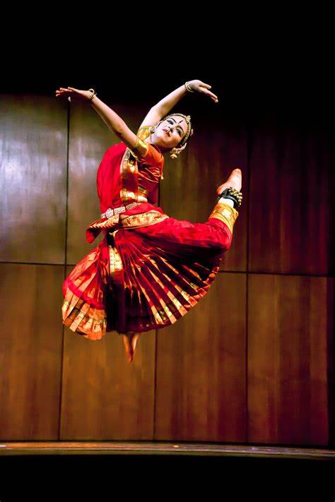

BHARATHANATYAM

Bharatanatyam (Tamil: பரதநாட்டியம்) is a major form of Indian classical dance that originated in Tamil Nadu.[1][2] It is one of the eight widely recognized Indian classical dance forms, and expresses South Indian religious themes and spiritual ideas, particularly of Shaivism and in general of Hinduism.[3][4][5]
A description of Bharatanatyam from the 2nd century CE can be found in the ancient Tamil epic Silappatikaram, while temple sculptures of the 6th to 9th century CE suggest it was a highly refined performance art by the mid-1st millennium CE.[6][7] Bharatanatyam is the oldest classical dance tradition in India.[8] Bharatanatyam is the state dance form of Tamil Nadu.
Theyyam (/t̪eːjjəm/; romanised: teyyam) are Hindu ritualistic dance forms practiced in northern Kerala and some parts of Karnataka. Theyyam is also known as Kaḷiyāṭṭaṁ or Tiṟa. Theyyam consists of traditions, rituals and customs associated with temples and sacred groves of Malabar.[1] The people of the region consider Theyyam itself as a channel to a god and they thus seek blessings from Theyyam..
More